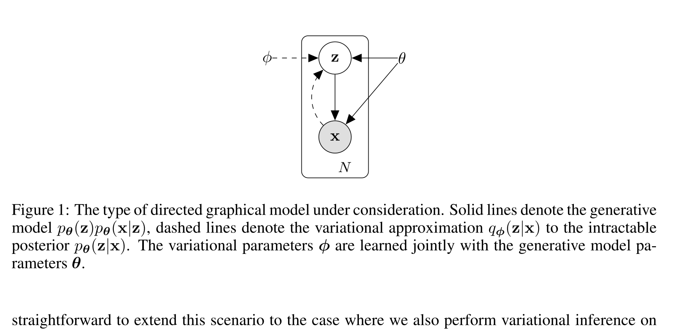

Auto-Encoding Variational Bayes
Diederik P. Kingma, Max Welling · arXiv:1312.6114 · 2013（v11, 2022）· Zotero QXNNLJAW
这篇论文的主贡献不是“发明一个带瓶颈的自编码器”，而是给连续潜变量模型提供一套可扩展、低方差、端到端可微的变分学习方法：SGVB 估计器与 AEVB 算法。VAE 是论文 §3 给出的代表性实例。
§1 它真正解决什么
当真实后验 $p_\theta(z\mid x)$ 难以计算时，用一个可学习的近似后验 $q_\phi(z\mid x)$ 代替；再通过重参数化，把“对随机变量采样”改写为“对固定噪声做可微变换”，从而同时训练推断网络与生成模型。
展开原文 · Abstract
“posterior inference can be made especially efficient by fitting an approximate inference model”
§2 一张图里的两个方向

§3 ELBO：把难算的似然拆成两项
- $D_{KL}\ge 0$
- 近似后验与真实后验的差距永远非负。
- $\mathcal L$
- 因此不会超过 $\log p_\theta(x)$；最大化它会同时提高数据似然并逼近后验。
- 难点
- 真实后验仍不可算，但优化下界不要求显式知道它。
- 重建项
- 要求潜变量保留足以解释当前样本的信息。
- KL 项
- 让不同样本的后验可由统一先验覆盖，生成时才能直接从先验采样。
- 权衡
- KL 太强会丢信息，太弱会形成难采样的碎片化潜空间；原论文没有解决后来的 posterior collapse 等全部问题。
§4 重参数化：为什么采样仍能反传
直接写 $z\sim q_\phi(z\mid x)$ 时，随机采样节点挡住对 $\phi$ 的普通反向传播。论文把同一随机变量写成确定函数 $g_\phi$ 与外部噪声 $\epsilon$ 的组合。
- $\epsilon$
- 与参数无关的随机源；每个 batch 可重新采样。
- $\mu_\phi,\sigma_\phi$
- 编码器输出，可被自动微分。
- $z$
- 对 $\phi$ 成为确定、可微的函数；Monte Carlo 估计可直接用 SGD 优化。
§5 AEVB：一次 minibatch 里发生什么
1. 取 minibatch 观测 $x$
不再为每个数据点单独运行迭代推断；这是“amortized inference”带来的规模优势。
2. 编码近似后验
网络给出 $\mu_\phi(x)$ 与 $\log\sigma_\phi^2(x)$，定义高斯 $q_\phi(z\mid x)$。
3. 重参数化采样
采无参数噪声 $\epsilon$，构造 $z=\mu+\sigma\odot\epsilon$。
4. 估计 ELBO 并更新 $\theta,\phi$
解码得到 $p_\theta(x\mid z)$；重建项与 KL 项共同反传，一次更新两套参数。
§6 原论文证据与边界
§7 为什么 WAM 路线要先读 VAE
LDM、视频 DiT 与许多生成式 WAM 并不在原始 RGB 上直接扩散，而是先用编码器把图像/视频压到低维 latent，再对 latent 去噪。VAE 提供了“可训练编码分布 + 可采样连续潜空间 + 解码回观测”的基础语法。
| VAE 里的 $x$ | 单个图像/数据点 |
| Video VAE 里的 $x$ | 时空视频块；编码器/解码器通常带时序下采样 |
| WAM 里的条件 | 历史观测、语言、机器人状态与动作 |
| 仍未解决 | latent 是否保留接触、几何和可执行动作所需信息 |
VAE 只负责建立可学习潜空间，不负责学习未来动力学。真正的 WAM 还要在 latent 上建模时间、干预与动作—后果关系。
Latent Diffusion 把 DDPM 的去噪过程搬进自编码器潜空间，直接连接 VAE 与后面的 Video DiT / WAM。